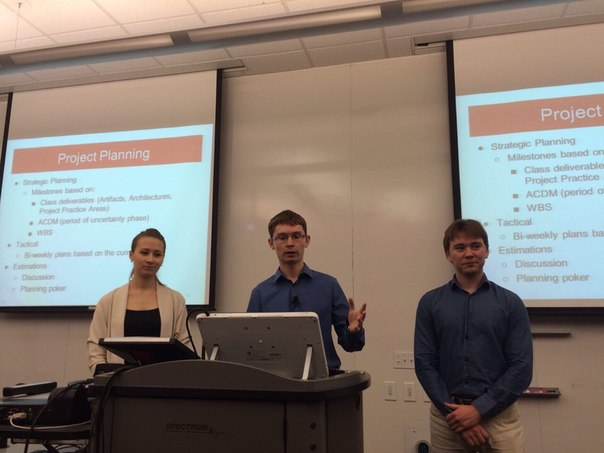

MSIT–SE: Accelerate your carreer!
MASTER OF SCIENCE IN INFORMATION TECHNOLOGY: SOFTWARE ENGINEERING
Have you ever...
-
Tick all that apply
...then MSIT–SE Program is your solution!
Software Engineering DOES
-
Produce high-quality software
Create software in a systematic, controlled, and efficient manner
-
Have a systematic approach
Is familiar with different approaches to software developemnt process
-
Emphasize hands-on learning
Applies acquired knowledge in practical projects
-
Use tradeoff analysis
Makes reasonable decisions taking into consideration current context
-
Train future team leads
Is able to manage a project of any size and complexity
Software Engineering DOES NOT
-
Focus on programming skills
-
Give you pure academic knowledge
Software Development Areas
PROJECT MANAGEMENT
- Ensures that product is delivered within budget and on time
- Selects team members and forms a team
REQUIREMENTS ENGINEERING
- Identifies what customer and users want
- Translates business “wishes” into language of implementation
DEVELOPMENT
- Implements separate pieces of final product
- Integrates components to achieve solution for problems stated
- PLANNING
- RISK MANAGEMENT
- REQUIREMENTS
- ARCHITECTURE
- DEVELOPMENT
- TESTING
RISK MANAGEMENT
- Identifies existing conditions that can cause future problems
- Plans for actions to prevent problems from happening
ARCHITECTURE
- Produces product structure that fits customer needs
- Sets up a blueprint for further development
QUALITY MANAGEMENT
- Identifies checks required to analyze software product and documentation
- Verifies that implemented solution works as expected
MSIT-SE Masters Program
Program is licensed by Carnegie Mellon University (Pittsburgh, USA)
The Master of Science in Information Technology – Software Engineering (MSIT-SE) degree is designed for professionals with one to two years of work experience in software development and who want to boost their career and become technical leaders, software architects or project managers.
The program was developed on the basis of Carnegie Mellon University (CMU) program in Software Engineering and is delivered face-to-face at Innopolis by a team of CMU-certified instructors who also bring extensive industry experience with them.
The program runs for 12 months and three semesters starting from September. The program is delivered solely in English.
Program ends with an industrial project from Innopolis industrial partners, where students can practice all the acquired knowledge.
- Introduction to Personal Software Process
- Models of Software Systems
- Methods: Deciding what to Design
- Managing Software Development
- Architectures of Software Systems
- Analysis of Software Artifacts
- Communication for Software Engineers I, II
Our graduates apply for:
- Software Architect
- Technical leader
- Project manager
Our ideal candidate
- 1–2 years of industial experience.
- English Intermediate or higher level;
- Programming language knowledge (Java, C++, С, C#, Python etc.);
- Basic Computer Science knowledge;
- Good knowledge of at least two of the following disciplines: compilation techniques, programming languages comparative analysis, operation systems, database systems;
Success stories
Anton Trantin
Current student
Mohamad Kassab
Architecture course instructor
Albert Nurgaliev
Innopolis graduate 2015
What were you doing before joining the program? (positions, years of experience, example of projects and tasks)
Until I joined the program I had been working for three years as a software engineer at Informatica (The data integration company). The product we were developing at the Kazan office is an Informatica Data Replication tool, which performed real time data replication across heterogeneous relational databases. I grew from a software engineer to a senior software engineer in those three years. During those years I was responsible for developing a thick-client of the system, which not only included tasks related to displaying certain GUI features, but also included some highly sophisticated utilities as checking the data replication consistency.
Why did you decide to join the program?
When I became a senior SE, I started to receive team-leading tasks, which required some additional knowledge apart from Computer Science. At that moment, I started wondering how to optimize development processes. I started to notice things in our development processes which didn’t seem effective, such as waterfallish approach in the development process. The program at Innopolis/CMU seemed to answer all of the questions I had.
What did you learn?
Once I finished the program indeed, I was fully aware of all popular development processes used in the industry including quality assurance methodologies, architectural patterns and much more!
How is it different from other programs or self-learning?
Based on my experience, I can conclude the following: it is definitely not a programming program! People who consider this master’s program should understand that this program is for future managers of software development. I cannot say that I wouldn’t have learned any of this by myself, but it would have taken me several years of trial and error in the industry to get this knowledge by myself. So it is for you to decide whether to take a shorter path and leave your job for a year or take a trial and error path.
What is your current position? How do you feel that you've benefited from the MSIT-SE program?
Shortly after graduation I was offered a position of director for a newly opened office in my home town of Kazan. Among the factors that influenced the job offer was the fact I graduated from one of the top universities having a software engineering degree. Since graduating, I feel that I can make informed decisions on which directions to take in the development process and how to lead my team. Many things that I have learned are indeed academic and require being fitted to the industry’s reality; nevertheless, without my knowledge there would be nothing to adapt.
